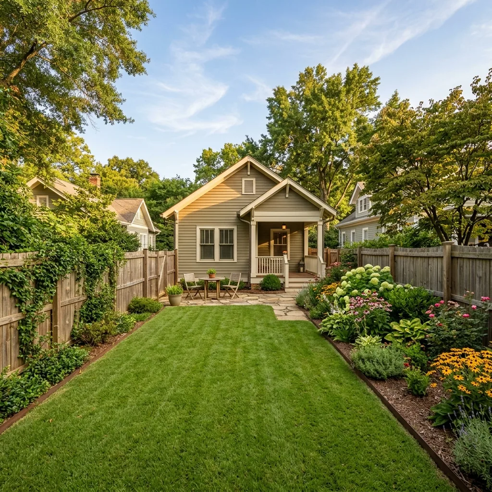

Budget Project Case Study #012
Reclaiming garden space on a tight Decatur lot using professional "Partial Abandonment" techniques.
"We needed the pool gone to make room for a vegetable garden and to stop the constant maintenance costs. We weren't planning on building a structure in that spot, so the budget-friendly partial fill was the perfect solution for us." — Homeowner, Avondale border

A partial pool fill significantly reduces machine time and hauling fees.
Decatur yards present distinct geological hurdles compared to other Metro Atlanta suburbs. While Cobb County is famous for its dense red Cecil clay, DeKalb County frequently features highly elastic micaceous silt. This type of soil contains high percentages of microscopic mica plates that slide past one another when wet. Because of this, micaceous silt holds significant water and is highly susceptible to spongy ground conditions and elastic rebound under heavy wheel loads.
For this project, simple non-engineered backfilling would have resulted in severe settlement. To counter the elastic properties of Decatur's subgrade silt, we imported clean, sandy clay loam fill from a certified local quarry. Sourcing soil with a balanced sand-to-clay ratio provides the shear strength needed to support a yard. During the backfilling process, we placed the soil in thin 6-inch lifts, monitoring the moisture content to ensure it remained near its Optimum Moisture Content (OMC). This prevents water retention in the soil and guarantees a stable subgrade that will not sink over time.
Before any machinery could enter the site, we had to clear regulatory requirements with DeKalb County's Planning & Sustainability Department and the City of Decatur arborist. The homeowner's narrow side yard was bordered by three mature water oaks, each measuring over 20 inches in Diameter at Breast Height (DBH). Under Decatur's strict tree preservation codes, any excavation within the Critical Root Zone (CRZ)—calculated as a 1-foot radius for every 1 inch of trunk DBH—requires professional arborist oversight.
To secure our permits, our team drafted a detailed Tree Protection Plan (TPP). We installed temporary chain-link root fences around the trees' CRZs and laid a 6-inch cushion of wood chips topped with heavy timber bridge mats along our equipment access route. This distributed the weight of our mini-skid steers, preventing soil compaction and root damage, and ensuring compliance with local codes, avoiding fines of up to $150 per DBH inch.
When a standard excavator won't fit, we deploy compact tracked equipment.
Standard pool demo equipment requires at least 8 to 10 feet of clearance. On this Decatur property, the gap between the house foundation and the neighboring property line's historic wooden fence was exactly 62 inches. Tearing down the fence was not an option due to property line disputes and historic preservation guidelines.
We utilized a 36-inch wide mini-skid steer and a compact micro-excavator. We laid 1.5-inch thick polymer ground protection mats to form a temporary roadway, shielding the client's brick patio and driveway from cracking. We ferried over 90 tons of soil and concrete in and out with zero damage to the property.
We pumped 25,000 gallons of pool water into the city sanitary sewer system using municipal-approved discharge hoses. Next, we installed our arborist tree root protection systems and ground protection mats. Using a mini-excavator equipped with a hydraulic impact breaker, we fractured the top 3 feet of the pool's concrete walls, collapsing the debris into the bottom of the basin. We then drilled twelve 12-inch drainage holes through the gunite floor to prevent the basin from trapping water underground.
Our crews imported 90 tons of clean structural backfill soil. Using our mini tracked loaders, we brought the soil in via the protected access path and spread it in thin 6-inch horizontal layers (lifts). We compacted each layer using a walk-behind vibratory plate compactor and a heavy sheepsfoot roller. We monitored soil moisture levels closely, ensuring we achieved maximum soil stability and preventing any future settlement issues.
We spread 4 inches of nutrient-rich organic topsoil over the compacted zone and graded the yard to match the natural landscape slope, ensuring stormwater runoff drains away from the house. We seeded the yard with turf-grade Fescue grass, laid straw mulch blankets, cleaned the access pathway, and removed our protection mats. The DeKalb County building inspector performed the final on-site inspection and officially closed the permit.
Because the Decatur homeowner planned to construct raised beds and use the reclaimed area for an organic vegetable garden, standard backfill soil was not sufficient. Compacted clay-silt soils lack the pore space and aeration required for root systems of vegetables like tomatoes, squash, and root crops. To resolve this, we laid a 4-inch base of crushed granite gravel beneath the fill zone to act as a drainage blanket, preventing groundwater pooling at the subgrade contact point.
The top 12 inches of backfill was blended with aged organic leaf compost and local sandy loam, creating a loose, well-draining soil profile with a neutral pH of 6.5. We also performed a percolation test (perc test) by digging a 12-inch test hole, filling it with water, and measuring the drop rate. The site achieved a drain rate of 2.2 inches per hour, which is ideal for preventing root rot while maintaining adequate soil moisture retention during the hot Georgia summer months.
Get a budget-friendly estimate for your tight-access property.
Request Budget Estimate